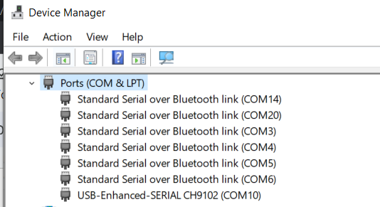
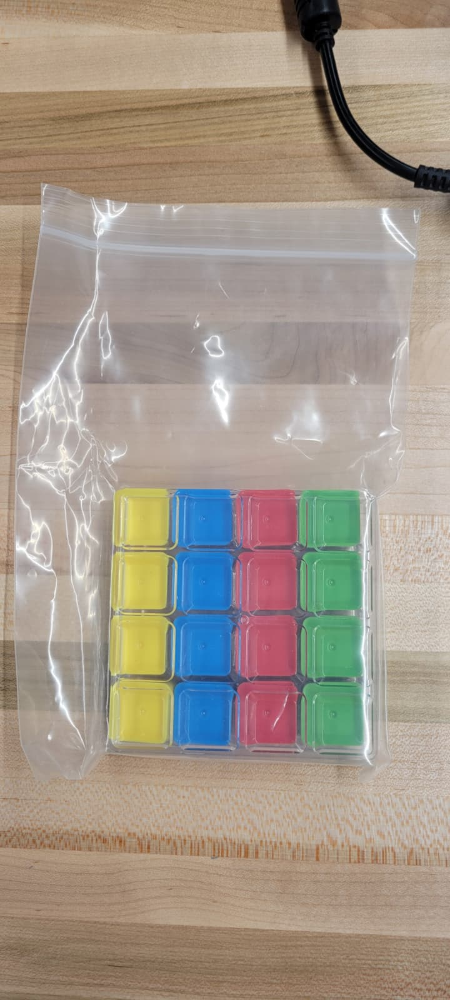
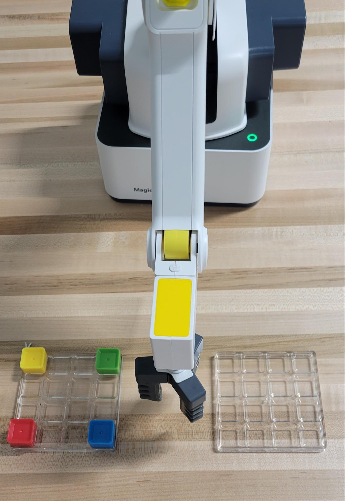
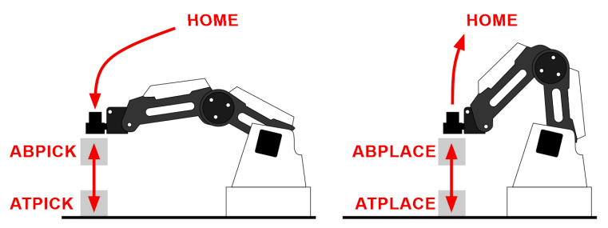
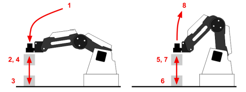

Articulated robots - Lab 2
Pick-and-Place with Suction and Gripper End Effectors
Instructor: Prof. Mostafa Yourdkhani
Author:
- Tatwik Meesala: smeesala@asu.edu
- Rajesh S Aouti: raouti@asu.edu
Duration: 2 hours
Robot: Dobot Magician Lite
Preparations before class
- Software: Python with pydobot, and pydobot2. You may need to update your drivers.
- Read the entire document before coming to the lab.
- Get familiar with all the packages you have installed. Write an example code for yourself.
Deliverables
- Lab Report
- Python Source Files
- Demonstration Video
- Lab Check-Off
Introduction
This lab introduces students to robotic pick-and-place operations using the Robot Magician Lite.
Key objectives:
- Gain practical experience with suction cups as end effectors.
- Implement motion sequences using Python and the pydobot library.
- Understand teaching, touching up points, and coordinate accuracy.
NOTE: Install both the versions: pydobot, pydobot2. You can use pip for installing in case of windows or you use brew in case of mac.
Preparations
To find the COM port of the robot:
Open the Device Manager and expand the ports, and find the COM port number

(Mac: ls /dev/tty.* | grep usb) (Linux: ls /dev/tty*)
Using Python
After the above preparations are completed, the manipulation of the robotic arm can be implemented. First, open the installed PyCharm/VS Code/Jupyter NB, create a new Python file, and use the template provided.
Key Vocabulary
- Pick and Place – Sequential moving of objects between points.
- Relative positions – Positions defined relative to a reference frame.
- Home – Safe rest position.
- Linear vs. Joint Movements – Cartesian vs. rotational motion.
- End Effector (EoAT or EE) – Suction cup or gripper attached to the robot.
- Teaching/Touching Up – Recording and refining robot coordinates.
Blocks/Pallets
- Find the Blocks, Pallets, and all required components in the cabinet below the table.

You are responsible for returning the blocks/pallets to the original bag and placing them in the cabinet below. All components and grippers must also be stored in the cabinet below.
Lab 2: Pick and Place with Suction Cup
Robotic arms are well-suited for performing pick-and-place operations, such as placing small electronic components on circuit boards, as well as large boxes on pallets.
Goal: Use the suction cup end effector to perform multi-position pick-and-place operations using cubes.
Procedure
- Turn off the robot and then attach the suction cup to the Dobot Magician Lite.

- Find a home position.
- Record positions:
- Home
- Intermediate Point
- Record the positions of the corner blocks of both the palletization pallet, as shown in the figure below.
- NOTE: Total Record Points: 8 points for the corners, 1 intermediate point, and 1 home position.
Make sure to secure the pallet using tape, place all the surplus cubes back in the bag.

- Pick one block and place it in the same corner on the other pallet. Repeat this process to transfer all the blocks from the filled pallet to the empty one. After which you will have to return all the blocks to the original position.
- NOTE: Make sure to record the points using the jog button. Note: When trying to get the current coordinates of the robot, make sure to have a delay (as the robot motion takes some time).
- Write a Python program:
- Enable suction with .suck(True) at the pick point.
- Disable suction with .suck(False) at drop points.
- Add appropriate time.sleep() delays.
- Execute sequence:
- Pick a block from Pallet 1.
- Place in Pallet 2 → hold 2s → release.
- Repeat it with 3 more blocks.
- Return all the blocks to their original position.

